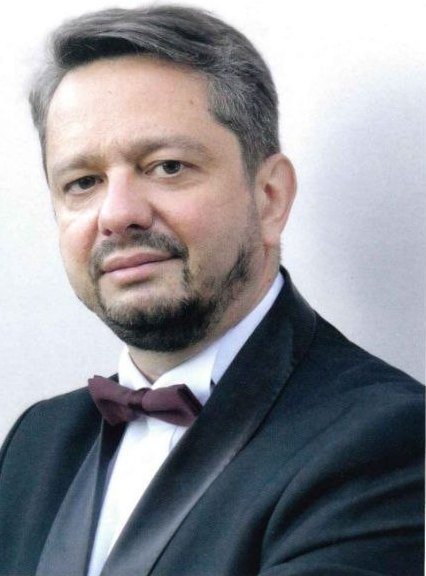

Игорь Вышегородцев
Особо разыскиваемый управляющий
Жизнь нужно прожить так, чтобы тебя разыскивал Интерпол. Дважды…
2 разаснят Red Notice Интерпола
25 летарбитражным управляющим
4 страныопыт тюрем: Россия, Хорватия, Бельгия, Испания
2 высшихтехническое и юридическое образование

Кто я такой
Меня зовут Игорь Вышегородцев
Два раза меня разыскивал Интерпол. Два раза я доказал, что не виновен.
- Опыт тюрем России, Хорватии, Бельгии, Испании
- Два высших образования — техническое и юридическое
- Четверть века — арбитражный управляющий, более 130 процедур банкротства
- Обучение в Совете Европы: обращение в Европейский суд по правам человека
Я смогу вас защитить.
Подробнее обо мне, интервью и рассказУслуги
Чем я могу вам помочь
Двенадцать направлений — от снятия Red Notice до онлайн-свадьбы из любой страны мира. Нажмите на пункт, чтобы узнать подробности.
- 01Снять Red Notice→
- 02Защитить от экстрадиции→
- 03Подобрать страну для релокации→
- 04Адаптация в стране релокации→
- 05Подобрать второй паспорт→
- 06Альтернативный приговор от JudgeAI→
- 07Экспертное заключение по уголовному делу→
- 08Открыть счёт и компанию в США→
- 09Вывести ситуацию из забвения в публичную плоскость→
- 10Нотариальная доверенность онлайн→
- 11Свадьба онлайн из любой страны мира→
- 12Обвиняют вас? Проверим, кто дал им на это право→
Без иллюзий
Так выглядит «возвращение на Родину»
Если на вас уже завели дело — или вот-вот заведут, — времени на раздумья мало. Лучше подготовиться заранее, чем объяснять потом из камеры, почему не успели.
Советы от особо разыскиваемого управляющего
Как подготовиться к релокации, если грозит уголовное дело
Список, проверенный на себе. Видео и полный чек-лист — отмечайте, что уже сделано.
- Сделайте два загранпаспорта для всех членов семьи — со сдвигом во времени начала и окончания действия.
- По возможности оформите международные водительские права.
- Получите свежую справку об отсутствии судимости. Берите её регулярно.
- Заберите с собой все личные документы: права на все виды транспорта, свидетельства о рождении всех членов семьи, свидетельство о браке, дипломы, справку 2-НДФЛ. Сделайте их перевод с апостилем на английский или на язык страны, где у вас есть второй паспорт.
26
пунктов, которые нужно сделать до того, как за вами придут. Документы, деньги, связь, здоровье, «тревожный чемоданчик».